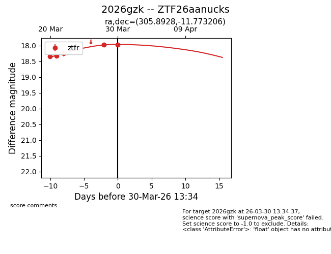
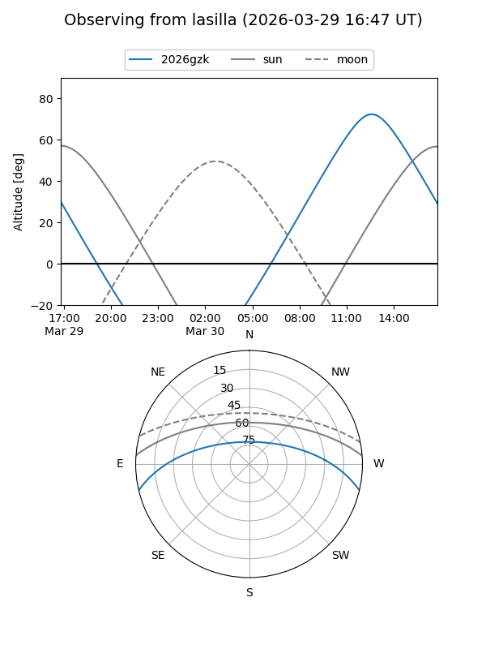
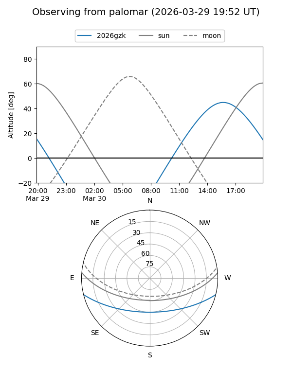
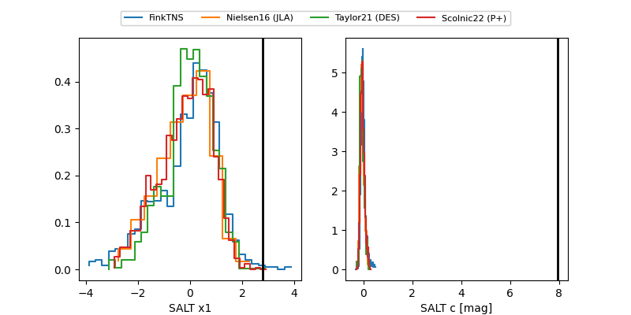

2026gzk
Target 2026gzk at 2026-03-30 13:38
Aliases and brokers:
FINK: link
Lasair: link
ALeRCE: link
TNS: link
YSE: link
alt names
ZTF26aanucks (ztf,fink_ztf)
2026gzk (tns,yse)
Coordinates:
equatorial (ra, dec) = 305.8928,-11.77321
equatorial (HMS+DMS) = 20:23:34.28,-11:46:23.54
galactic (l, b) = (32.4910,-25.71757)
Flags:
Photometry:
last ztfr=17.97
5 ztfr detections
Lightcurve

Visibility


Additional plots
